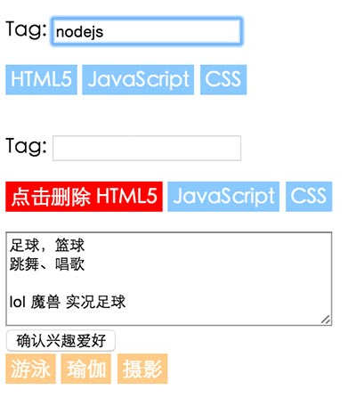

基于任务20，将任务20的代码进行抽象、封装，然后在此基础上实现如图中的两个需求：Tag输入和兴趣爱好输入
如示例图上方，实现一个tag输入框 •要求遇到用户输入空格，逗号，回车时，都自动把当前输入的内容作为一个tag放在输入框下面
Tag不能有重复的，遇到重复输入的Tag，自动忽视
每个Tag请做trim处理
最多允许10个Tag，多于10个时，按照录入的先后顺序，把最前面的删掉
当鼠标悬停在tag上时，tag前增加删除二字，点击tag可删除
如示例图下方，实现一个兴趣爱好输入的功能
通过一个Textarea进行兴趣爱好的输入，可以通过用回车，逗号（全角半角均可），顿号，空格（全角半角、Tab等均可）等符号作为间隔
当点击“确认兴趣爱好”的按钮时，将textarea中的输入按照你设定的间隔符，拆解成一个个的爱好，显示在textarea下方
爱好不能重复，所以在下方呈现前，需要做一个去重
每个爱好内容需要做trim处理
最多允许10个兴趣爱好，多于10个时，按照录入的先后顺序，把最前面的删掉
 ，模拟一个队列，队列的每个元素是一个数字，初始队列为空
，模拟一个队列，队列的每个元素是一个数字，初始队列为空 ，直接用高度表示数字大小
，直接用高度表示数字大小